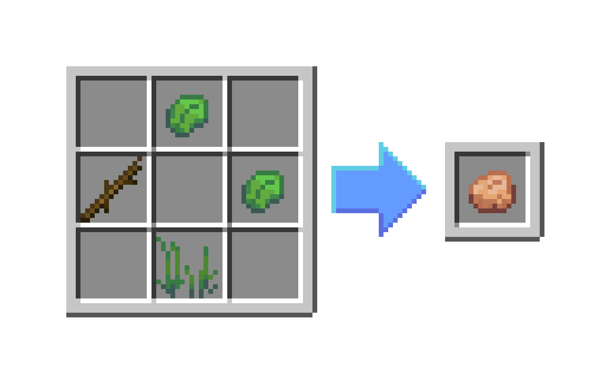
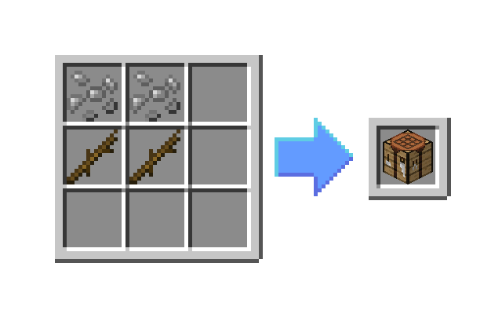
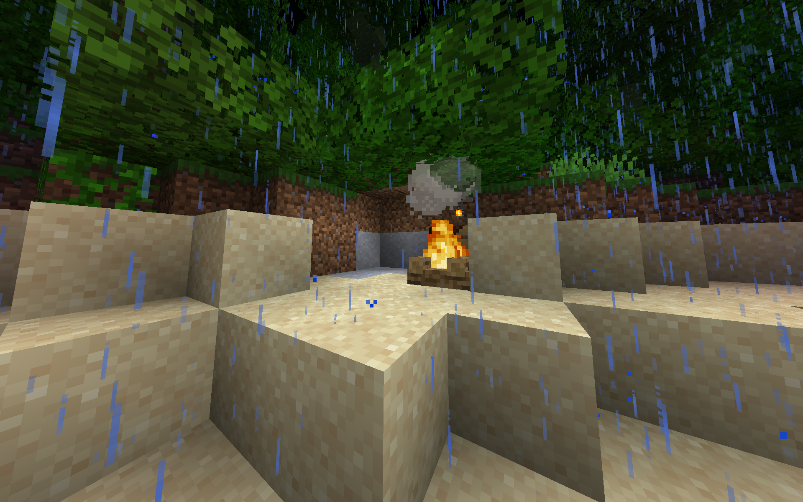

A good idea once you first spawn in is to locate the shore. Here you will find a surplus of sand blocks, a valuable source of glass and metal. Every block around you in the environment will drop varying important resources. They are as stated below.
| Block | Common Drops | Rare Drops |
|---|---|---|
| Leaves |
|
|
| Sand |
|
|
| Grass Block |
|
|
| Dirt Block |
|
|
Remember to keep these drops in mind or refer to this page when you need a specific resource.
Now, let's get started on making a campfire. We'll first need some Kindling, an important resource for crafting campfires. You can craft this without a workbench, the recipe is shown below. (You can place the ingredients wherever)

Now that we have the kindling we actually need to make the campfire.
For that, we need a workbench. Let's get one. Find some sand and dig around until you find metal salvage.
Once you have the salvage, turn it into some metal fragments.
Note: The recipe provides two fragments for each piece of salvage.
Now we can make our workbench! Grab your sticks, some metal fragments, and here we go..
Don't place down that workbench just yet! At this point I recommend you find a place for your first shelter. If you want something easy and fast just dig a hole into a hill, works perfectly. The important thing to remember about night in Island Surival 2 is that you will require something above your head to protect you from rain. Having a fire isn't enough, it rains every night and if you are exposed you will become cold very quickly.
Once you've made your perfect shelter, place down your workbench. Now, let's finally make this campfire. You'll need a little bit of everything to craft it, the recipe is below.
If you placed the campfire, you've probably noticed by now that it's not lit. To light it, we'll need a fire starter. Head back to the shore to mine for another piece of salvage and make sure you have a pebble handy. When you have those two things we can craft our fire starter.
With your fire starter handy, right click on the campfire to light it.
If you have a basic shelter with a cozy campfire inside you're a lot closer to not dying! Congrulations!
P.S. If you're stuck, check the Recipe Book!